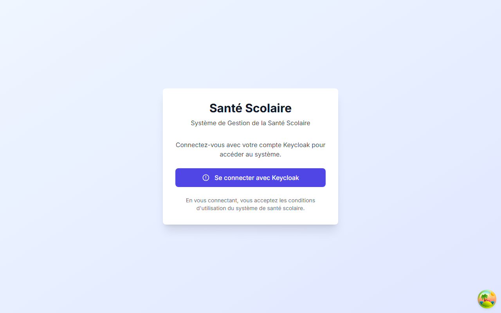
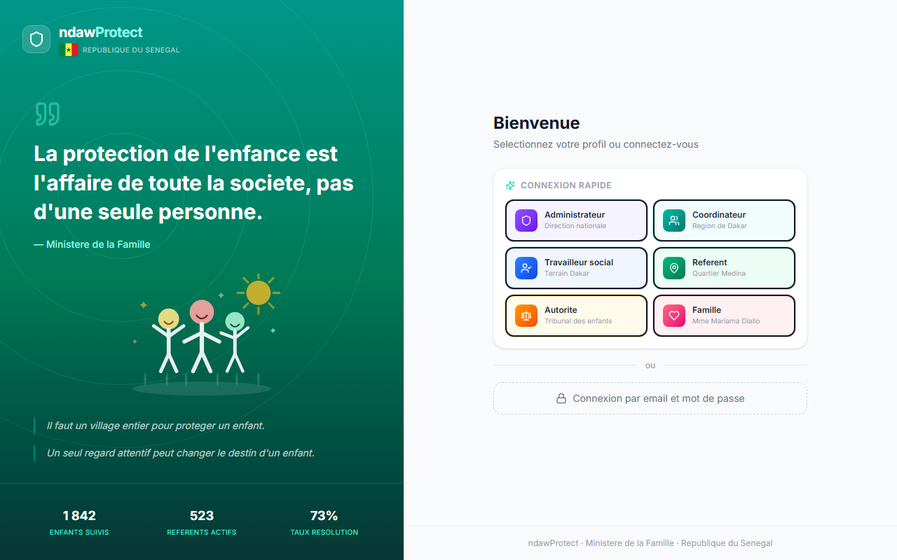
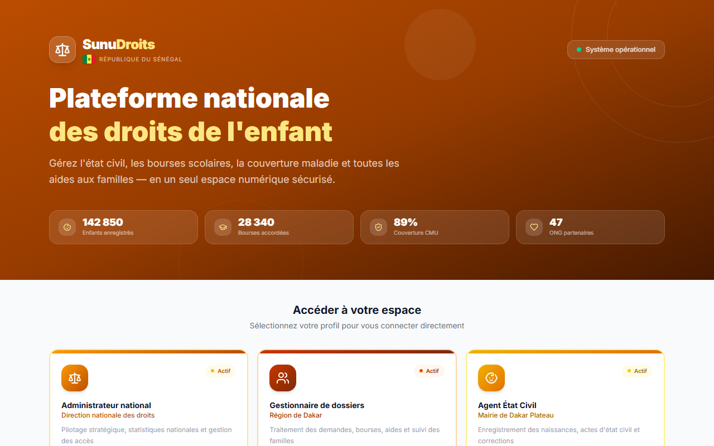
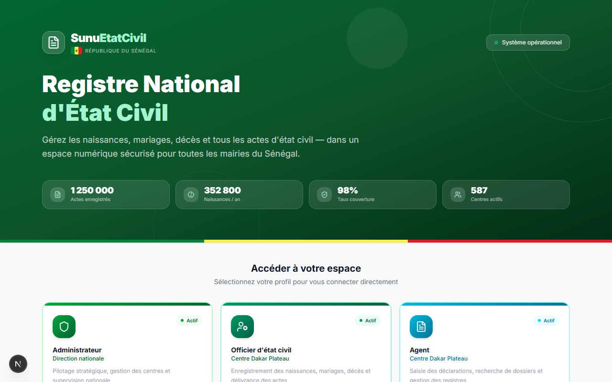
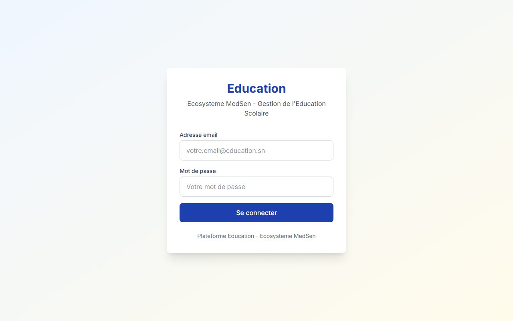
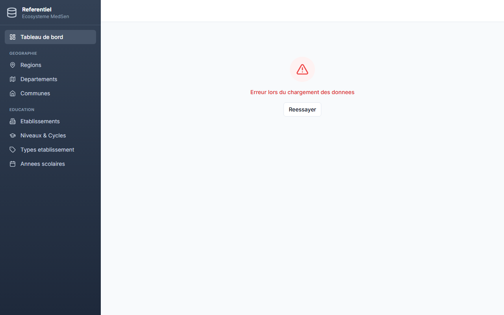

Six applications interconnectées pour transformer la santé scolaire, l'éducation, la protection de l'enfance, l'état civil et les droits sociaux de chaque Sénégalais.
Kawé signifie « ce qui est élevé » en wolof. C'est l'idée d'un Sénégal qui s'élève — par ses enfants en bonne santé, ses citoyens identifiés, ses familles accompagnées.
En 1990, le Sénégal a ratifié la Convention Internationale des Droits de l'Enfant (CIDE).
Il s'est engagé devant le monde à garantir à chaque enfant le droit à la santé, à l'éducation,
à la protection, à une identité et à un niveau de vie décent.
Plus de trente ans après, des progrès ont été faits. Mais la réalité quotidienne
de trop d'enfants sénégalais reste en décalage avec cette promesse.
Chaque application répond à un droit fondamental de la CIDE. Ensemble, elles donnent au Sénégal les outils pour honorer concrètement ses engagements envers chaque enfant.
Chaque application couvre un domaine fondamental. Ensemble, elles forment un système national intégré — connectées par un identifiant unique qui suit chaque citoyen tout au long de sa vie.
MedSen connecte les Inspections Médicales des Écoles (IME) avec chaque établissement scolaire du Sénégal. Suivi médical complet de chaque élève : bilans de santé, campagnes de vaccination, dépistages visuels et auditifs, suivi nutritionnel, gestion des pathologies chroniques, consultations, urgences et certificats médicaux.
Leer signifie « lumière » en wolof. C'est un système éducatif complet repensé, du ministère jusqu'à la salle de classe. Gestion institutionnelle (inscriptions, emplois du temps, examens nationaux) et pédagogie par la conscience : pensée critique, connaissance de soi, créativité, mentorat communautaire.
Ndaw signifie « enfant » en wolof. Système d'alerte et d'intervention pour chaque enfant en danger : maltraitance, travail des enfants, mendicité forcée, enfants non scolarisés. Travailleurs sociaux, référents communautaires et autorités judiciaires agissent ensemble, en temps réel.
Pas seulement pour les enfants — pour tout le Sénégal.
SunuEtatCivil est le registre national d'état civil numérique pour toutes les mairies.
Naissances, mariages, décès, reconnaissances, adoptions, livrets de famille.
Il donne à chaque citoyen une identité officielle numérique
et permet la numérisation des archives historiques.
Les informations de chaque parent y sont essentielles — car pour protéger un enfant
efficacement, il faut connaître sa famille.
Pour chaque famille sénégalaise, pas seulement les enfants.
SunuDroits est le registre national des droits sociaux :
bourses scolaires, aides alimentaires, couverture maladie universelle (CMU),
logement social, accès aux loisirs et à la culture.
Les parents, les familles monoparentales, les personnes âgées — tous les citoyens
qui ont droit à des prestations les trouvent ici. Les aides trouvent
les familles, pas l'inverse.
Le Référentiel Commun centralise toutes les données de référence du Sénégal :
les 14 régions, 45 départements, 557 communes, les établissements scolaires,
les niveaux d'enseignement et les années scolaires.
Chaque modification est automatiquement propagée aux cinq applications.
Aucune donnée n'est dupliquée — une seule source de vérité pour tout l'écosystème.
Chaque application est indépendante mais connectée aux autres. Un événement dans une application déclenche automatiquement des actions dans les autres — sans intervention humaine.
Un événement dans une application déclenche automatiquement des actions dans les autres.
Les applications sont fonctionnelles et disponibles en démonstration. Partenaires, institutions et bailleurs peuvent les tester immédiatement.






Toutes les applications sont fonctionnelles et prêtes pour un déploiement pilote.
Contactez-nous pour organiser une démonstration en direct
ou pour discuter d'un partenariat.
Kawé — ce qui est élevé. L'objectif est simple : qu'aucun enfant ne passe à travers les mailles du filet, qu'aucune famille ne soit oubliée par le système.
« Il faut un village pour élever un enfant. Sénégal Kawé est ce village — numérisé, coordonné, vigilant. Ce que le médecin découvre éclaire l'enseignant. Ce que l'enseignant observe protège l'enfant. Ce que le travailleur social signale débloque une aide. Ce que l'officier d'état civil enregistre ouvre toutes les portes. »
— Vision Sénégal Kawé, 2026Vous êtes une institution, un bailleur, un partenaire technique ou simplement curieux ? Nous serions ravis de vous faire une démonstration complète de l'écosystème.
senegalkawe@gmail.com